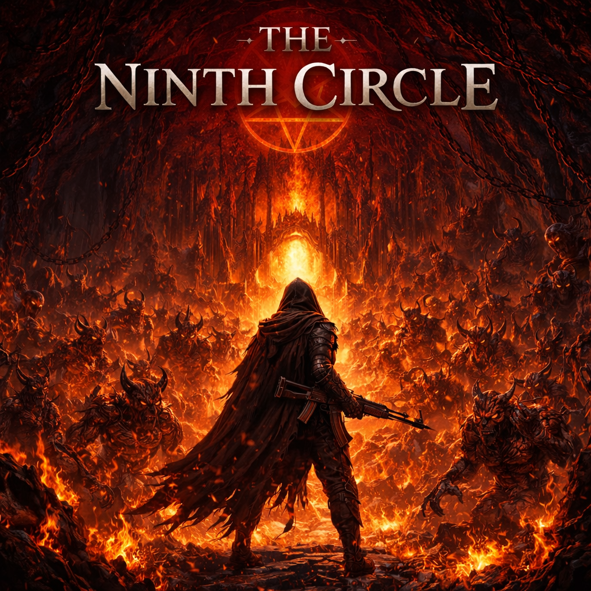

About the Project
The Ninth Circle is a roguelike action game developed in Unreal Engine 5 inspired by Dante's Inferno. The project focused on building modular gameplay systems that support replayability through procedural dungeon generation, enemy AI behaviors, and responsive combat mechanics. The game received 1st Place in the UC Irvine Video Game Design Competition.

Design & Iteration
The design focused on creating a gameplay loop that remained engaging across repeated runs. Early prototypes prioritized responsive combat and enemy interaction before expanding into procedural dungeon layouts. Enemy archetypes and encounter systems were designed to progressively increase difficulty while encouraging players to adapt strategies rather than rely on repetition.
Technical Architecture
The game was implemented using a hybrid C++ and Blueprint architecture in Unreal Engine 5. Dungeon layouts are generated by dynamically assembling modular room segments while ensuring valid connectivity between rooms. Enemy AI behavior is driven by behavior trees and state-based logic that control movement, targeting, and attack execution. Combat interactions rely on collision tracing and animation-driven attack windows to ensure responsive player feedback.
Systems Design
The procedural dungeon generator uses graph-style connectivity logic to ensure rooms connect in valid configurations while maintaining randomness. Enemy AI navigation leverages Unreal's navigation mesh system for pathfinding and spatial queries. Core gameplay systems rely on efficient data structures such as arrays and component-based actor systems to manage enemy entities and dynamic level elements.
What Was Hard
A major challenge was balancing randomness with playability in the procedural generation system. Rooms needed to be assembled dynamically while still producing layouts that felt intentional and navigable. Another challenge involved coordinating animation timing, hit detection, and AI behavior to maintain responsive combat while avoiding desynchronization between systems.
What I Learned
This project strengthened my understanding of modular system design and game engine architecture. I gained experience building procedural generation systems, implementing AI behaviors, and optimizing performance by moving critical gameplay logic from Blueprints into C++. It also emphasized the importance of building systems that support rapid iteration during gameplay testing.